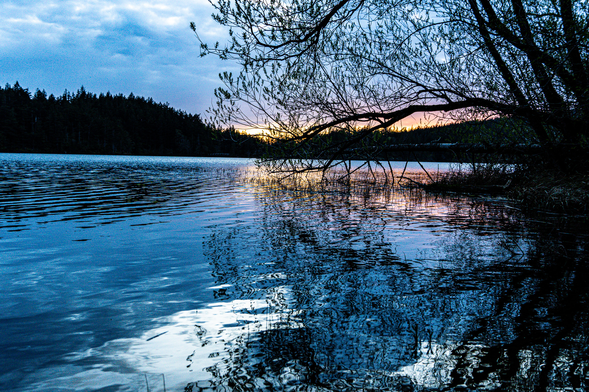
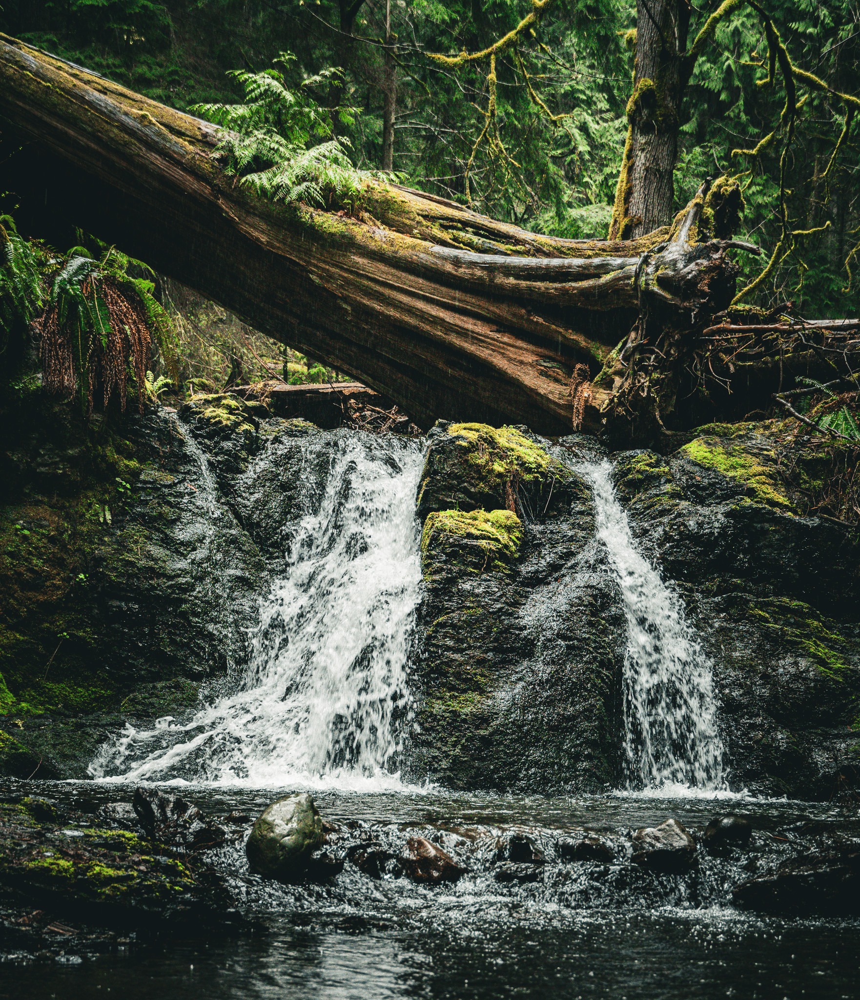

Early Spring on Orcas Island
On the weekend of April 5, we packed up all our gear, the dog and some warm clothing and headed to Anacortes to catch an early ferry to Orcas Island with our friends for the weekend. Our campsite was in Moran State Park on a beautiful lake.

We spent some time exploring the park, the beaches, the town, and the top of Mt. Constitution. We got really lucky with some beautiful weather and great company.

Gear:
- Sony A6600
- Sony 3.6-5.6 / 18-135
- Sony f1.8 / 50
- TTArtisan 2-16 / 25